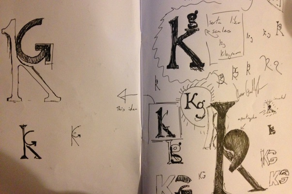
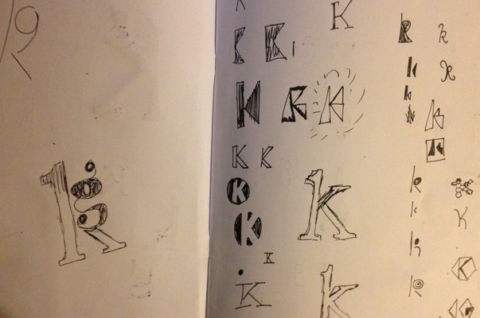
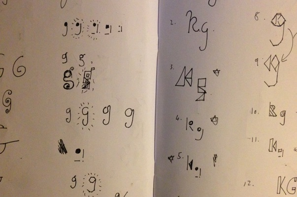
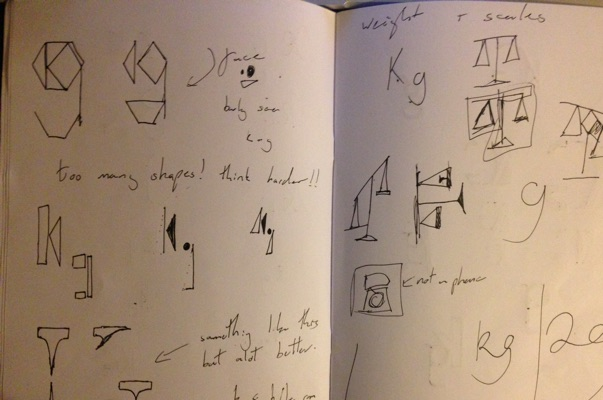
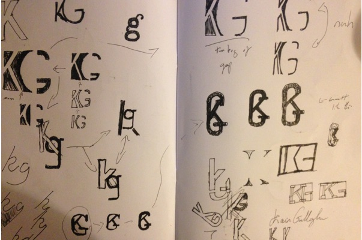
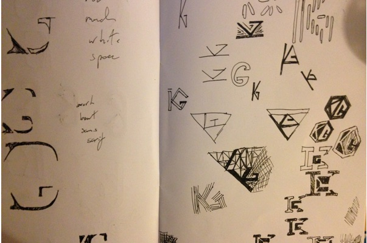

As part of a self branding project, completed in first year, I created a Monogram from my initials. the final design was created in sketch, but as always the design process was started on paper.
     s
After narrowing down my favourite designs I chose to work on a few designs to develop them further.
I expiremented with colour in sketch, however thought that the black and white or even a dark grey would be more effective for the design.